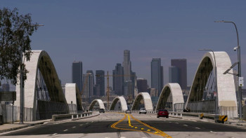

| Home | News | Gallery | About | Contact |
US Astronaut Buzz Aldrin's Apollo 11 jacket sold for $2.7 million
Explainer: Is the US in a recession?A first read on US economic growth last quarter, due out Thursday, will amplify an ongoing debate over whether the country is, or will soon be, in recession. |
|
New $588mn bridge in Los Angeles closes several times amid chaos and collisionsThe newest bridge in Los Angeles, a $588-million architectural marvel with views of the downtown skyline, opened to great fanfare on July 10. |
 |
Not guns, criminals responsible for mass shootings: US gun execsTop executives at US gunmakers testified on Wednesday that criminals, not their products, were responsible for mass shootings, as they faced questions from a US House committee investigating recent massacres in Texas and New York.as they faced questions from a US House committee investigating recent massacres in Texas and New York.as they faced questions from a US House committee investigating recent massacres in Texas and New York. |
image:Reuters file photo |
US Astronaut Buzz Aldrin's Apollo11 jacket sold for $2.7million.Image:Collected
In total, the New York auction garnered $8.2 million for 68 items sold out of the 69 offered, including $819,000 for a flight plan.The suits worn on the Moon by Aldrin and Armstrong are part of the National Air and Space Museum's collections in Washington.
In this photo provided by the Odesa City Hall Press Office, firefighters put out a fire in the port after a Russian missiles attack in Odesa, Ukraine, on June 5, 2022. File photo: Odesa City Hall Press Office via AP
US Astronaut Buzz Aldrin's Apollo 11 jacket sold for $2.7 million
The jacket worn by US astronaut Buzz Aldrin during his 1969 flight to the Moon aboard Apollo 11 was sold at auction for $2.7 million in New York recently, Sotheby's announced.The white jacket, adorned with an American flag, NASA's initials, a patch for the Apollo 11 mission and the name "E. ALDRIN," is part of a personal collection of items the 92-year-old astronaut decided to put up for sale."The exceptionally rare garment was chased by multiple bidders for almost ten minutes before selling to a bidder on the phone," Sotheby's said in a statement."After deep consideration, the time felt right to share these items with the world, which for many are symbols of a historical moment, but for me have always remained personal mementos of a life dedicated to science and exploration," Aldrin, the last living member of Apollo 11's three-member flight crew, said in a statement last week.He explained the jacket was separate from the space suit he wore while walking on the moon with fellow astronaut Neil Armstrong, but that he wore it while flying to and from the Moon."I wore this Inflight Coverall Jacket...in the Command Module Columbia, on our historic journey to the Moon and back home again during the Apollo 11 mission," Aldrin said.
Grain extraction from Ukraine slow amid uncertainties, mines in Black Sea
Shipping companies are not rushing to export millions of tons of trapped grain out of Ukraine, despite a breakthrough deal to provide safe corridors through the Black Sea. That is because explosive mines are drifting in the waters, ship owners are assessing the risks and many still have questions over how the deal will unfold.The complexities of the agreement have set off a slow, cautious start, but it's only good for 120 days — and the clock began ticking last week.The goal over the next four months is to get some 20 million tons of grain out of three Ukrainian sea ports blocked since Russia's Feb. 24 invasion. That provides time for about four to five large bulk carriers per day to transport grain from the ports to millions of impoverished people worldwide who are facing hunger.It also provides ample time for things to go awry. Only hours after the signing Friday, Russian missiles struck Ukraine's port of Odesa — one of those included in the agreement.

| APPS | COMMENT POLICY | SMS SUBSCRIPTION | RSS |
| SITEMAP | ADVERTISEMENT | NEWSLETTER | PRIVACY POLICY |
| CONFERENCE HALL | ARCHIVES | Follow Us | CONTACT |
Any unauthorized use or reproduction of The Daily Star content for commercial purposes is strictly prohibited and constitutes copyright infringement liable to legal action.
© 2022 thedailystar.net | Made by: Sohel Rana